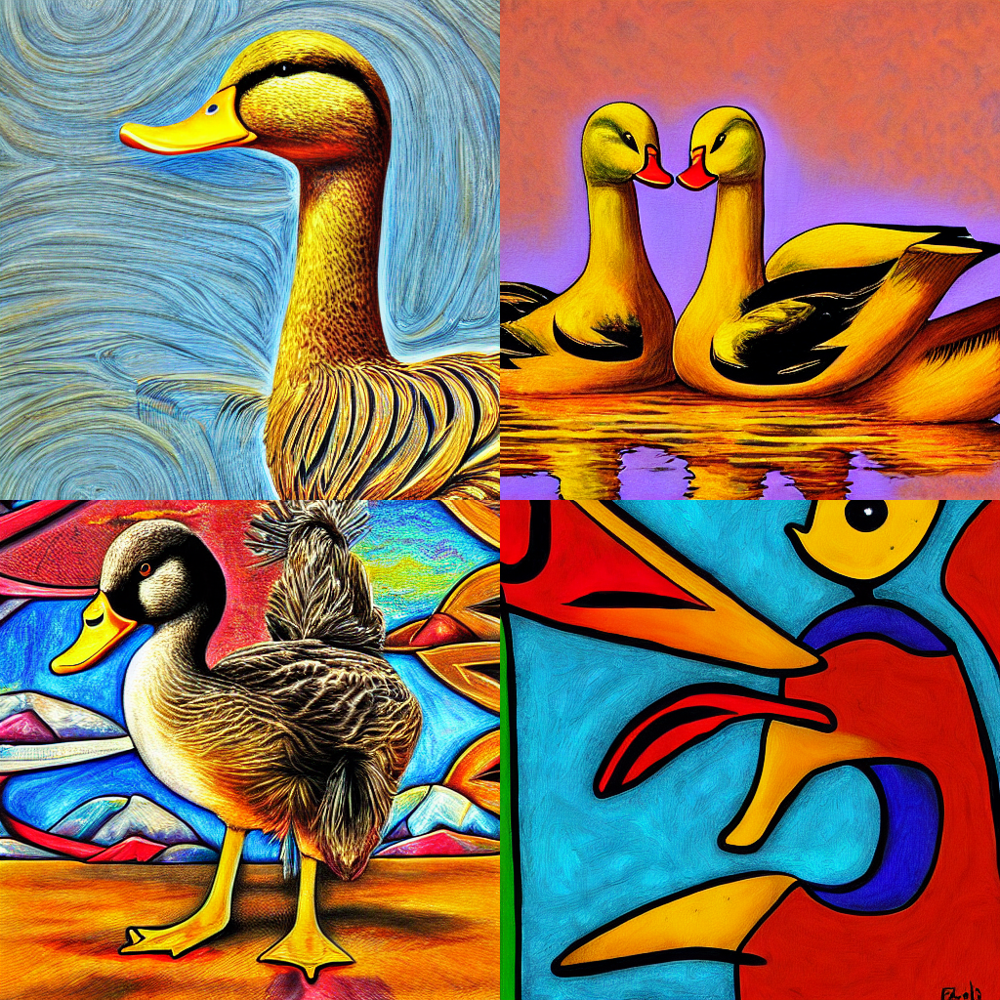
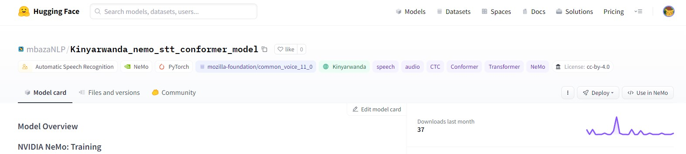

Creating Spoken Dialog Systems in Ultra-Low
Resourced Settings
An End-to-End speech intent classification system for Flemmish language. The system uses transforms speech to the phoneme space and carries out data augmentation on the transcripts then feeds into a CNN/LSTM Model that classifies the intents.

Personalizing Stable Diffusion for Text-to-Image Generation using Textual Inversion
To address the bias seen in image generation in the context of the African continent, we use Textual Inversion to finetune Stable Diffusion to recognize and generate images that understand and simulate the diversity of African painting styles.

Automatic Speech Recognition for Kinyarwanda
An ASR model for transctiping Kinyarwanda speech into text. The conformer model was trained on the CommonVoice dataset and acheived a Word Error Rate (WER) of 17.3